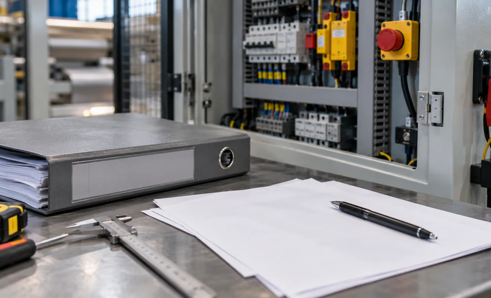

Published September 21, 2026 | By HDPTH Technical Editorial Team
Slitter rewinders sit squarely inside European machinery law, and 2027 is the year the legal basis changes underneath them. The risk for buyers is contractual: a machine ordered now may be manufactured, shipped and put into service across the boundary, and whoever carries the compliance risk when a declaration cites the wrong legal act is decided by the purchase contract. This guide covers what changes, which documents to demand, and which clauses to write into transition orders.
What actually changes on 20 January 2027
Regulation (EU) 2023/1230 entered into force in July 2023 and applies in general from 20 January 2027; Directive 2006/42/EC is repealed with effect from the same date. Three consequences matter commercially. As a Regulation rather than a Directive, it is directly applicable and no longer depends on national transposition. There is no window in which a manufacturer may pick either framework: before the cut-off only the Directive applies, after it only the Regulation. Alignment with the standard EU product framework also adds obligations for importers and distributors.
What changes for the machine itself
The essential health and safety requirements are revised rather than rewritten, and most of what a good machine already meets carries over. The additions that matter for converting equipment concern software and data.
- Cybersecurity of safety-related software: software and data performing safety functions must be protected against corruption and unauthorised access.
- Self-evolving behaviour: safety components using machine learning to ensure safety functions are among the categories requiring third-party assessment.
- Digital documentation by default: instructions may be supplied digitally, with paper on request — printed manuals must be asked for in the order.
Conventional slitter rewinders are not among the listed high-risk categories, so they typically follow manufacturer internal control. The exception is worth checking: if a supplier proposes adaptive control performing a safety function, the conformity route can change, and that belongs in writing before signature.
The documentation package to demand
Treat documentation as a deliverable with a deadline, not as a box that arrives with the machine: name each item and link delivery to final acceptance or final payment.
| Document | What to check | Why it matters at handover |
|---|---|---|
| EU declaration of conformity | References the applicable legal act, machine identification, signatory, notified body where applicable | The document authorities and insurers ask for first |
| Technical documentation and risk assessment | Risk assessment method, standards applied, residual risks and protective measures | Shows the safety case was engineered, not asserted |
| Harmonised standards list | Standards cited for guarding, control systems, electrical equipment | Basis for presumption of conformity |
| Instructions for use | Language version for the country of installation; digital or printed as agreed | Digital is the default — paper must be requested |
| Safety component certificates | Interlocks, light curtains, emergency stop chain, safety PLC functions | Each safety function needs evidence, not a part number |
| Software documentation | Version, update policy, firmware authentication, cybersecurity measures | Determines whether updates break conformity |
Transition-period contract language
Four clauses carry most of the risk:
- Compliance framework clause: the supplier warrants conformity with the legal act applicable on the date the machine is placed on the market — Directive 2006/42/EC before 20 January 2027, Regulation (EU) 2023/1230 from that date.
- Documentation clause: the documents above are deliverables due before final acceptance, at no additional charge.
- Update and modification clause: the supplier states how long safety-related firmware updates remain available, gives notice before any substantial modification, and confirms who then carries manufacturer responsibility.
- Remedy clause: if the machine cannot lawfully be put into service because conformity evidence is missing, the supplier remedies it at its own cost and bears the delay.
Buyers importing directly should add an importer clause allocating who verifies conformity, holds documentation and responds to market surveillance. Where an installation combines a slitter rewinder with other equipment, state which party is responsible for the conformity of the assembled line — the same question that arises in our CE marking buyer checklist.
Machines already installed, and modifications
Machinery lawfully placed on the market before the cut-off does not need re-certification; the change is not retrospective for products already on the market. What creates new obligations is a substantial modification affecting safety — retrofitting guarding, replacing a safety PLC or adding remote access can all qualify, and the party performing it takes on manufacturer responsibilities. Upgrade projects are therefore a compliance question worth raising before a retrofit is quoted, alongside the handover checks in our commissioning checklist.

Ordering for delivery across the 2027 change?
Send HDPTH your installation country, delivery schedule and machine scope. We will confirm which legal framework applies and supply the documentation package with the offer.
Submit Your Project InquiryQuestions to put to every vendor
- Which legal act will the declaration of conformity cite for our delivery date, stated in the offer?
- Is a notified body involved for our configuration, and under what procedure?
- Which harmonised standards or common specifications are applied, and can we see the list before contract?
- Do any control functions rely on machine-learning behaviour performing a safety function?
- How do you handle substantial modifications and later retrofits?
Planning compliance as a project?
Read our guides on machine safety and guarding and factory acceptance testing to align documentation with handover.
Contact HDPTHFrequently asked questions
When does Regulation (EU) 2023/1230 replace Machinery Directive 2006/42/EC?
The Regulation entered into force in July 2023 and applies in general from 20 January 2027, the date on which Directive 2006/42/EC is repealed. There is no window in which a manufacturer may choose between the two: up to the cut-off only the Directive applies, from that date only the Regulation. For a buyer the decisive moment is when the machine is placed on the market or put into service.
Does a machine bought before 2027 have to be re-certified in 2027?
No. Machinery lawfully placed on the market under the Directive before the cut-off does not have to be re-certified when the Regulation starts to apply; the change is not retrospective. What triggers new obligations is a substantial modification — a physical or digital change affecting safety. The party performing it takes on manufacturer responsibilities for the modified machine, so upgrades and control-system replacements should be treated as compliance projects.
Is a slitter rewinder in the high-risk category that requires a notified body?
Conventional slitter rewinders are not among the categories listed for mandatory third-party conformity assessment, so they normally follow the manufacturer internal-control route with self-declared conformity. The list does cover safety components and embedded systems with self-evolving behaviour that ensure safety functions. If a supplier offers adaptive or vision-based safety functions that evolve from operating data, ask whether the conformity route changes — in writing, before signature.
What documentation should an EU buyer require from a slitter rewinder supplier?
Require a named package as a deliverable: EU declaration of conformity citing the applicable legal act and, where relevant, the notified body; technical documentation including the risk assessment; the list of harmonised standards or common specifications applied; instructions for use; safety component certificates; and software documentation. Set the delivery deadline before final payment and confirm the language required in the country of installation.
What contract language should cover the transition period?
Four clauses do most of the work: a compliance clause naming the legal framework applicable on the date of placing on the market, so the cut-off risk does not sit with the buyer; a documentation clause making every deliverable a condition of final acceptance; an update and modification clause covering firmware updates and substantial modifications; and a remedy clause for the case where the machine cannot lawfully be put into service because conformity evidence is missing.
Does the Regulation change anything about digital instructions and cybersecurity?
Yes on both. Digital instructions become the default format, with paper copies on request — so a buyer needing printed shop-floor manuals should say so in the order. The essential health and safety requirements also now address cybersecurity, requiring protection of safety-related software and data against corruption and malicious access. For a connected machine with remote service access, ask which measures were implemented and how firmware updates are authenticated.
Sources
- EUR-Lex: Regulation (EU) 2023/1230 on machinery, repealing Directive 2006/42/EC
- EUR-Lex: Machinery Directive 2006/42/EC — in force until 20 January 2027
- ISO 12100: risk assessment and risk reduction
- IEC 60204-1: electrical equipment of machines
- IEC 62443: industrial communication networks and system security